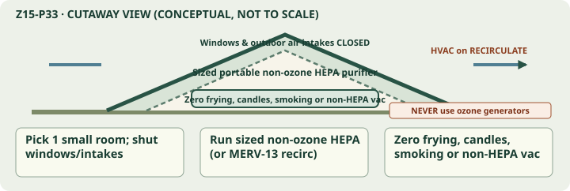

Z15-P33 · Disaster scenarios · New manuscript
Assemble and run an indoor HEPA clean room during prolonged wildfire smoke
Create one low-particulate safe breathing room inside an ordinary home during multi-day smoke plumes without introducing indoor pollution or ozone.
When it applies · Multi-day Unhealthy/Hazardous wildfire smoke events impacting homes and apartments.
Equipment · Correctly sized portable HEPA air cleaner (non-ozone-generating) OR compatible HVAC MERV-13 filter on recirculate, plus interior room with few openings.

Actions
- Pick one comfortable interior room (often a bedroom) with minimal exterior doors/windows, close all exterior openings tightly, and run a correctly sized portable HEPA air cleaner continuously on high/medium—NEVER use an "ozone generator" or unverified ionizer air cleaner, which emits lung-damaging ozone gas![D07]
- If your home has central HVAC, set the system to RECIRCULATE (closing any fresh outdoor-air intake damper) and install a high-efficiency MERV-13 (or highest rating your exact furnace blower safely supports per manual) filter replaced promptly when gray with smoke soot.[D07]
- Eliminate ALL indoor particulate sources inside the clean room and house: NO frying/broiling on stoves, NO candles/incense, NO smoking/vaping, NO fireplaces, and NO vacuuming unless using a true sealed HEPA vacuum (regular vacuums stir fine settled ash back into breathing air).[D07]
Failure recognition · Running a portable HEPA purifier in the bedroom while frying bacon on a gas stove and burning scented candles in the kitchen next door.[D07]
Verify · Confirm true non-ozone HEPA purifier sized to room square footage, HVAC on recirculate, windows closed, and zero indoor smoke/candle/frying sources.[D07]
Stop or change course · Indoor room temperatures climbing to unsafe heat-wave levels inside a sealed clean room require prioritizing heat-stroke safety via air-conditioned clean-air shelters.[D07, D09]
Evidence and editorial notes
- D07 · US EPA · Create a Clean Room to Protect Indoor Air Quality During a Wildfire (current web edition)
- Section: Create a Clean Room > Indoor Filtration and Recirculation Setup · Conditions: Households sheltering indoors during multi-day wildfire smoke events
Support: Designate an interior room with few doors/windows, run a properly sized portable HEPA air cleaner (avoiding ozone generators) or set HVAC to recirculate with a MERV-13 filter if system-compatible, and avoid indoor combustion (candles, gas stoves, vacuuming without HEPA) that adds particulates.
Limitations: During simultaneous extreme heat and smoke, cooling takes priority if indoor temperatures become dangerous—relocate to a public clean-air cooling center. · Conflicting evidence: None; addresses compound smoke-plus-heat emergencies.
Editorial note: Core indoor clean-room assembly and compound-hazard card evidence. · Specialist reviewer: Indoor air quality and public health
Primary source · checked 2026-11-24 - D09 · FEMA / Ready.gov · Extreme Heat (current web edition)
- Section: Extreme Heat Waves, Heat Domes, and Power-Outage Cooling Plans · Conditions: Prolonged heat advisories, excessive heat warnings, and grid-strain brownouts
Support: Identify public cooling centers and air-conditioned backup locations ahead of heat waves, check twice daily on older adults/children/chronically ill neighbors, block solar gain through windows, never leave people or pets in parked vehicles, and activate 911 immediately for heat stroke.
Limitations: Electric fans alone do not prevent heat illness when indoor air temperatures climb into extreme heat ranges (above ~95°F) with high humidity. · Conflicting evidence: None; aligns with CDC-HEAT, E08, E19, and T09.
Editorial note: Anchors urban/rural heat-wave resilience and vulnerable-neighbor checks. · Specialist reviewer: Public health and emergency medicine
Primary source · checked 2026-11-24
Source lineage · US EPA Create a Clean Room; new manuscript · Classification · New manuscript.